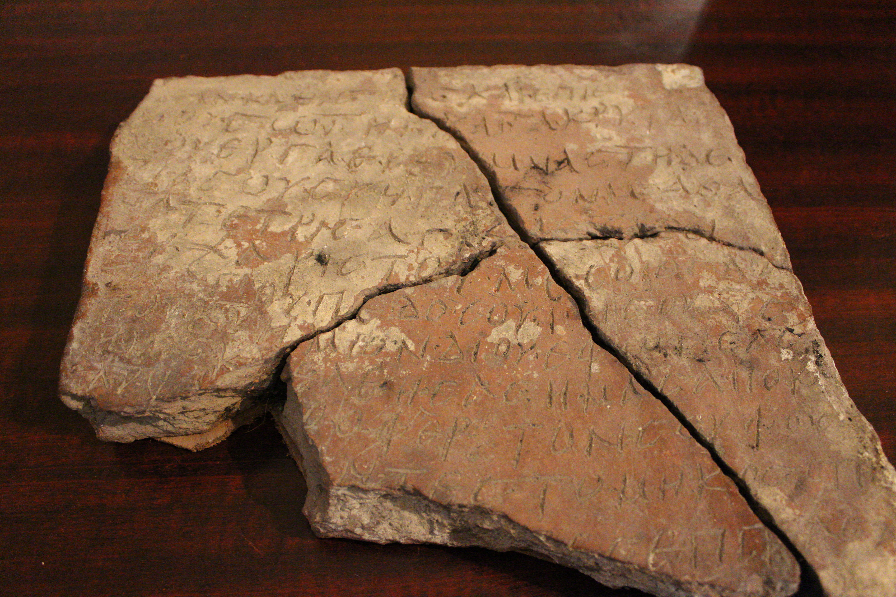

ნოსირის ბერძნული წარწერაGreek inscription of Nosiri
ნოსირის ბერძნული წარწერა
Greek inscription of Nosiri
შინაარსი / Summary
სავედრებელი Oration
ბიბლიოგრაფია Bibliography
კრიტიკული გამოცემა Interpretive Edition
ὅταν καθίσεις καὶ ἐπὶ θρόν -
νου σῶτηρ καὶ τὰ κρυτὰ
μου ἔργα ἐρευμνᾶς τῇ δε -
ξιᾷ σου σκέπασόν με ἀθά
5νατε τρισάγιε δ όξ α σοι
εὐχαριστοῦμαι σοι θ(εὸ)ς διὰ
τοῦ ἁγίου παιδό ς σου Ἰησοῦ Χ(ριστό)ς
τοῦ κ(υρίο)υ ἡμῶν δι οὗ ἐφώτισας
ἡμᾶς καὶ ἐλέησας ἡμᾶς ἀποκά -
10λυψας τὸ ἄφθαρτόν σου φῶς
σας ες ἐπὶ τὰ ς σάρ κας
დიპლომატიური გამოცემა Diplomatic Edition
ΟΤΑΝ ΚΑΘΙΣΕΙΣ ΚΑΙ ΕΠΙ ΘΡΟΝ
ΝΟΥ ΣΩΤΗΡ ΚΑΙ ΤΑ ΚΡΥΤΑ
ΜΟΥ ΕΡΓΑ ΕΡΕΥΜΝΑΣ ΤΗ ΔΕ
ΞΙΑ ΣΟΥ ΣΚΕΠΑΣΟΝ ΜΕ ΑΘΑ
5ΝΑΤΕ ΤΡΙΣΑΓΙΕ Δ ΟΞ Α ΣΟΙ
ΕΥΧΑΡΙΣΤΟΥΜΑΙ ΣΟΙ ΘΣ ΔΙΑ
ΤΟΥ ΑΓΙΟΥ ΠΑΙΔΟ Σ ΣΟΥ ΙΗΣΟΥ ΧΣ
ΤΟΥ ΚΥ ΗΜΩΝ ΔΙ ΟΥ ΕΦΩΤΙΣΑΣ
ΗΜΑΣ ΚΑΙ ΕΛΕΗΣΑΣ ΗΜΑΣ ΑΠΟΚΑ
10ΛΥΨΑΣ ΤΟ ΑΦΘΑΡΤΟΝ ΣΟΥ ΦΩΣ
ΣΑΣ ΕΣ ΕΠΙ ΤΑ Σ ΣΑΡ ΚΑΣ

Building plaque from Nosiri
{'ka': 'როდესაც დაჯდები ტახტზე, მაცხოვარო, და ჩემს ფარულ საქმეებს გამოიკვლევ, შენი\n მარჯვენით დამიცავი უკვდავო, სამგზის წმიდაო, დიდება შენდა. გმადლობ შენ, ღმერთო,\n წმიდისა შვილისა შენისა იესუ ქრისტე, უფლისა ჩვენისა გამო, რომლის მეშვეობით\n გაგვინათლე ჩვენ, შეგვიწყალე ჩვენ და გამოგვიცხადე უხრწნელი შენი ნათელი...\n ხანგრძლივობა დაამკვიდრე... ხორცთა მიმართ...', 'en': 'When you will sit on your throne, O Lord, and investigate my deeds, bless me with your right hand, you three times saint, praise be to you.\n Thank you, O Lord, for your son Jesus Chirst, our Lord, who brought light to us, be merciful to us and send to us the eternal light of yours.\n Award me with longevity … for the flesh...'}
{'ka': 'წარწერა ენობრივი ნორმებისა და პალეოგრაფიული მონაცემების მიხედვით შუაბიზანტიური ხანით (VI-VIII სს-ით) უნდა დათარიღდეს.\n ამას მხარს უჭერს ბიზანტიელ ისტორიკოსებთან (პროკოპი, იუსტინიანე, აგათია) "ნოსირისა" და წმ. სტეფანეს ტაძრის ხსენება.', 'en': 'Tinatin Kaukhchishvili:\n The word “θρόννου” has two orthographic errors, “θρόνου” is correct.\n The word κρυτά has the facilitation of joint πτ.\n The word "ἐρευμνᾶς" has orthographic error, "ἐρευνᾶς" is correct.\n According to the language norms and paleographic characteristics the inscription can be dated to the Middle Bysantinium period (VI-VIII centuries).\n Mentioning Nosiri and St Stephen churches by the Byzantinean historians (Procipius, Justinian, Agathia) also proves the same date.'}
<div type="edition" xml:lang="ka" ana="mtavruli" xml:space="preserve">
<ab>
<lb n="1"/><w lemma="ქრისტე"><expan><abbr>ქ</abbr><ex>რისტ</ex><abbr>ე</abbr></expan></w>
<w lemma="განსუენება"><expan><abbr>გა</abbr><ex>ნ</ex><abbr>ო</abbr><ex>ჳ</ex><abbr>ს</abbr><ex>უ</ex><abbr>ენე</abbr></expan></w>
<w lemma="სულ">სოჳ<lb n="2" break="no"/>ლსა</w>
<name nymRef="ვაჩა">ვაჩაჲს<lb n="3" break="no"/>ასა</name>
<name nymRef="გურა"><expan><abbr>გო</abbr><ex>ჳ</ex><abbr>რაჲ<lb n="4" break="no"/>სასა</abbr></expan></name>
<name nymRef="მირა"><expan><abbr>მ</abbr><ex>ი</ex><abbr>რა</abbr><ex>ჲ</ex><abbr>ს</abbr><ex>ა</ex><abbr>ს</abbr><ex>ა</ex></expan></name>
</ab>
</div>